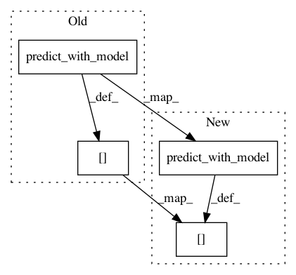

cceae1fee29ec0269616e7c2364f1714a518b2c3,python/src/vmaf/core/quality_runner_extra.py,VmafQualityRunnerWithLocalExplainer,_run_on_asset,#VmafQualityRunnerWithLocalExplainer#Any#,22
Before Change
feature_result = vmaf_fassembler.results[0]
model = self._load_model(asset)
xs = model.get_per_unit_xs_from_a_result(feature_result)
ys_pred = self.predict_with_model(model, xs)
if self.optional_dict2 is not None and \
"explainer" in self.optional_dict2:
explainer = self.optional_dict2["explainer"]
else:
explainer = LocalExplainer()
exps = explainer.explain(model, xs)
result_dict = {}
result_dict.update(feature_result.result_dict) // add feature result
result_dict[self.get_scores_key()] = ys_pred // add quality score
result_dict[self.get_explanations_key()] = exps // add local explanations
return Result(asset, self.executor_id, result_dict)
After Change
feature_result = vmaf_fassembler.results[0]
model = self._load_model(asset)
xs = model.get_per_unit_xs_from_a_result(feature_result)
ys_pred = self.predict_with_model(model, xs)["ys_pred"]
if self.optional_dict2 is not None and \
"explainer" in self.optional_dict2:
explainer = self.optional_dict2["explainer"]
else:
explainer = LocalExplainer()
exps = explainer.explain(model, xs)
result_dict = {}
result_dict.update(feature_result.result_dict) // add feature result
result_dict[self.get_scores_key()] = ys_pred // add quality score
result_dict[self.get_explanations_key()] = exps // add local explanations
return Result(asset, self.executor_id, result_dict)
In pattern: SUPERPATTERN
Frequency: 3
Non-data size: 4
Instances
Project Name: Netflix/vmaf
Commit Name: cceae1fee29ec0269616e7c2364f1714a518b2c3
Time: 2018-02-28
Author: zli@netflix.com
File Name: python/src/vmaf/core/quality_runner_extra.py
Class Name: VmafQualityRunnerWithLocalExplainer
Method Name: _run_on_asset
Project Name: Netflix/vmaf
Commit Name: dc375b6a8c999a57798a6b8c10e6c309e2154da1
Time: 2018-02-23
Author: zli@netflix.com
File Name: python/src/vmaf/core/quality_runner_extra.py
Class Name: VmafQualityRunnerWithLocalExplainer
Method Name: _run_on_asset
Project Name: Netflix/vmaf
Commit Name: dc375b6a8c999a57798a6b8c10e6c309e2154da1
Time: 2018-02-23
Author: zli@netflix.com
File Name: python/src/vmaf/core/quality_runner.py
Class Name: VmafQualityRunner
Method Name: _run_on_asset